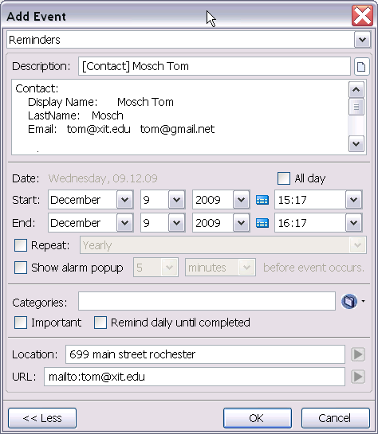
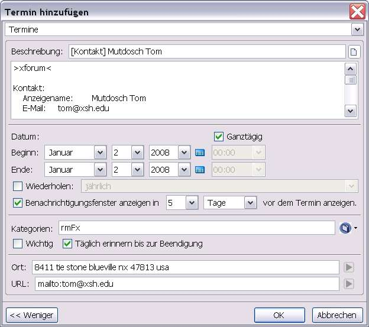

Reminders for TB/Addressbook and Contacts
Reminders for TB/Addressbook and Contacts
Reminders for TB/Addressbook and Contacts
Reminders for TB/Addressbook and ContactsReminders/Events can be based on contacts in the TB Addressbook.
Inhalt |
Using the AddressBook of Thunderbird/SeaMonkey, a reminder can be created for a specific card. Simply select the card, and from the context menu, select 'Add Reminder'


In the 'Notes' some details about the selected contact are added: the name of the address book (here >xforum<), the contact, telephone, addresses and the 'Other' parameters. All pre-entered information can be changed, deleted or added at will, the entries in the address book are not changed.
The entry 'Location' is formed from the address field 'Private',
the icon  can be used to open Google Maps directly.
can be used to open Google Maps directly.
The 'URL' entry has the primary email address of the contact and the
Icon
will open a message compose dialog dirclty.
Reminders created with the previously described method for contacts can be opened via the ReminderFox list. On the corresponding line in the list, the context menu offers an item: [Open contact]. So the contact card can be opened and edited directly in the Thunderbird address book.